R を整域、 とする。
 がある。このとき、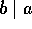 と書く。
がある。このとき、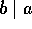 と書く。
 がある。このとき、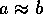 と書き同伴という。
がある。このとき、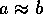 と書き同伴という。
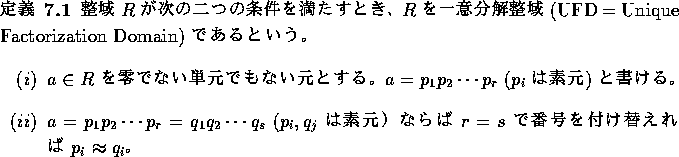
 p = ab とする。仮定より、
p = ab とする。仮定より、 または 。 とする。
または 。 とする。
 だから、 で p = au、
だから、 で p = au、 と書ける。 で、R は整域だから 。
と書ける。 で、R は整域だから 。
 p を素数とする。 とすると、a または のときは明らか。
ab = pc、、、
p を素数とする。 とすると、a または のときは明らか。
ab = pc、、、 を素元分解とする。
を素元分解とする。
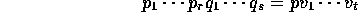
素元分解の一意性より 又は 。そこで、
 とすると、。
とすると、。 とすると、。
とすると、。
この命題は、ある環 R が一意分解整域ではないことを示すためにも用いられる。すなわち、素元ではあるが、それで生成されたイデアルが、素イデアルではない元の存在が示されればそれで良い。
命題  により 、また、命題
により 、また、命題  により
により  も示してあるから、 を示せばよい。
とすると、p = qa と書ける。仮定より、q が単元か、a が単元。それぞれ、 または、 となる。従って、 は極大イデアルである。
も示してあるから、 を示せばよい。
とすると、p = qa と書ける。仮定より、q が単元か、a が単元。それぞれ、 または、 となる。従って、 は極大イデアルである。
R を単項イデアル整域とし、 とする。このとき、 だから を含む極大イデアル が存在する。命題  より は素元である。
より、 と表すことが出来、 より、 は、
より は素元である。
より、 と表すことが出来、 より、 は、 を真に含む。 ならば素元 が存在して、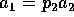、() と書くことが出来る。この様にして順に
を真に含む。 ならば素元 が存在して、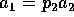、() と書くことが出来る。この様にして順に  を取っていくとき、正則元でない限りにおいて、真に増加する列
を取っていくとき、正則元でない限りにおいて、真に増加する列
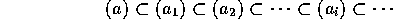
がつくれる。
は R のイデアルだから、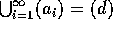 と書ける。従って、ある i について、 となるから、 となり真に増加することはない。よってある r について  は正則元、すなわち、 は素元で、。
は正則元、すなわち、 は素元で、。
一意性：
、 とし、r に関する帰納法を用いる。 で、 は素イデアルだから、 となる i がある。しかし、 で、どちらも極大イデアルであるから、 である。番号を付け替え、
は素イデアルだから、 となる i がある。しかし、 で、どちらも極大イデアルであるから、 である。番号を付け替え、 、
、 とすると、
とすると、
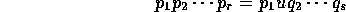
を得るから、。帰納法により、r = s かつ、番号の付け替えにより、 となることが分かる。
これにより、ユークリッド整域は、単項イデアル整域であり、単項イデアル整域は、一意分解整域であることが分かった。しかし、これだけでは、 や、 が一意分解整域かどうかは分からない。
や、 が一意分解整域かどうかは分からない。